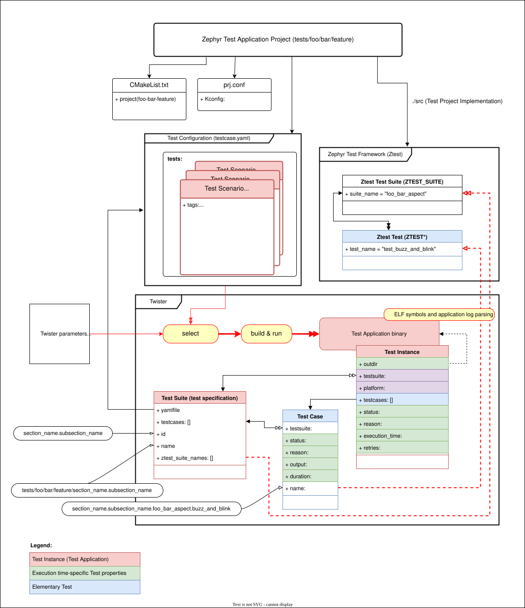
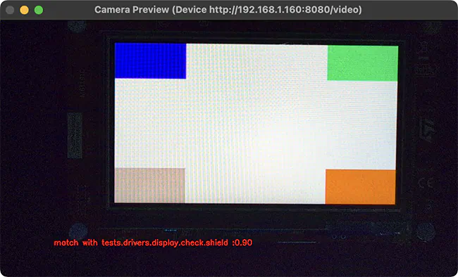
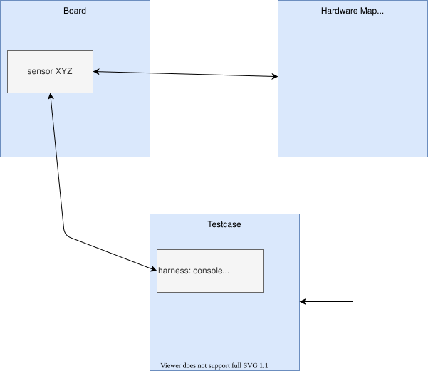

Test Runner (Twister)
Twister scans for the set of test applications in the git repository and attempts to execute them. By default, it tries to build each test application on boards marked as default in the board definition file.
The default options will build the majority of the test applications on a defined set of boards and will run in an emulated environment if available for the architecture or configuration being tested.
Because of the limited test execution coverage, twister cannot guarantee local changes will succeed in the full build environment, but it does sufficient testing by building samples and tests for different boards and different configurations to help keep the complete code tree buildable.
When using (at least) one -v option, twister’s console output
shows for every test application how the test is run (qemu, native_sim, etc.) or
whether the binary was just built. The resultant
status
of a test is likewise reported in the twister.json and other report files.
There are a few reasons why twister only builds a test and doesn’t run it:
The test is marked as
build_only: truein its.yamlconfiguration file.The test configuration has defined a
harnessbut you don’t have it or haven’t set it up.The target device is not connected and not available for flashing
You or some higher level automation invoked twister with
--build-only.
To run the script in the local tree, follow the steps below:
$ source zephyr-env.sh
$ ./scripts/twister
zephyr-env.cmd
python .\scripts\twister
If you have a system with a large number of cores and plenty of free storage space, you can build and run all possible tests using the following options:
$ ./scripts/twister --all --enable-slow
python .\scripts\twister --all --enable-slow
This will build for all available boards and run all applicable tests in a simulated (for example QEMU) environment.
If you want to run tests on one or more specific platforms, you can use
the --platform option, it is a platform filter for testing, with this
option, test suites will only be built/run on the platforms specified.
This option also supports different revisions of one same board,
you can use --platform board@revision to test on a specific revision.
The list of command line options supported by twister can be viewed using:
$ $ZEPHYR_BASE/scripts/twister --help
usage: twister [-h] [-E FILENAME] [-F FILENAME] [-T TESTSUITE_ROOT] [-f]
[--list-tests] [--test-tree] [-G | --emulation-only]
[--simulation {mdb-nsim,nsim,renode,qemu,tsim,armfvp,xt-sim,native,custom,simics,whisper}]
[--device-testing] [--pre-script PRE_SCRIPT]
[--device-serial DEVICE_SERIAL]
[--device-serial-baud DEVICE_SERIAL_BAUD]
[--device-serial-pty DEVICE_SERIAL_PTY]
[--generate-hardware-map GENERATE_HARDWARE_MAP]
[--hardware-map HARDWARE_MAP] [--persistent-hardware-map]
[--device-flash-with-test]
[--device-flash-timeout DEVICE_FLASH_TIMEOUT] [--flash-before]
[--flash-command FLASH_COMMAND] [--west-flash [WEST_FLASH]]
[--west-runner WEST_RUNNER] [--west-flash-cmd {flash,debug}]
[-a ARCH] [--vendor VENDOR] [-p PLATFORM] [-P EXCLUDE_PLATFORM]
[--platform-pattern PLATFORM_PATTERN]
[--test-pattern TEST_PATTERN] [--filter {buildable,runnable}]
[-t TAG] [-e EXCLUDE_TAG] [-s TEST | --sub-test SUB_TEST] [-K]
[--ignore-platform-key] [--level LEVEL] [-b]
[--prep-artifacts-for-testing]
[--package-artifacts PACKAGE_ARTIFACTS] [--test-only]
[--timeout-multiplier TIMEOUT_MULTIPLIER]
[--pytest-args PYTEST_ARGS] [--ctest-args CTEST_ARGS]
[--enable-valgrind | --enable-asan] [-A BOARD_ROOT]
[--allow-installed-plugin] [-B SUBSET] [--shuffle-tests]
[--shuffle-tests-seed SHUFFLE_TESTS_SEED] [-c] [--cmake-only]
[--enable-coverage] [-C] [--gcov-tool GCOV_TOOL]
[--coverage-basedir COVERAGE_BASEDIR]
[--coverage-platform COVERAGE_PLATFORM]
[--coverage-tool {lcov,gcovr}]
[--coverage-formats COVERAGE_FORMATS] [--coverage-per-instance]
[--disable-coverage-aggregation] [--test-config TEST_CONFIG]
[--disable-suite-name-check] [--enable-lsan] [--enable-ubsan]
[--force-color] [--force-toolchain] [--create-rom-ram-report]
[--footprint-report [{all,ROM,RAM}]] [--enable-size-report]
[--footprint-from-buildlog]
[-m | --compare-report COMPARE_REPORT] [--show-footprint]
[-H FOOTPRINT_THRESHOLD] [-D] [-z FILENAME] [-i] [-j JOBS] [-l]
[--list-tags] [--log-file FILENAME] [-M [{pass,all}]]
[--keep-artifacts KEEP_ARTIFACTS] [-N | -k] [-n]
[--aggressive-no-clean] [--detailed-test-id]
[--no-detailed-test-id] [--detailed-skipped-report] [-O OUTDIR]
[-o REPORT_DIR] [--overflow-as-errors] [--report-filtered]
[--platform-reports] [--quarantine-list FILENAME]
[--quarantine-verify] [--quit-on-failure]
[--report-name REPORT_NAME] [--report-summary [REPORT_SUMMARY]]
[--report-suffix REPORT_SUFFIX] [--report-all-options]
[--retry-failed RETRY_FAILED] [--retry-interval RETRY_INTERVAL]
[--retry-build-errors] [-S] [--enable-slow-only] [--seed SEED]
[--short-build-path] [--timestamps] [-u] [-v]
[-ll {NOTSET,DEBUG,INFO,WARNING,ERROR,CRITICAL}] [-W]
[-X FIXTURE] [-x EXTRA_ARGS] [-y]
[--alt-config-root ALT_CONFIG_ROOT]
...
positional arguments:
extra_test_args Additional args following a '--' are passed to the
test binary
options:
-h, --help show this help message and exit
-G, --integration Run integration tests
--emulation-only Only build and run emulation platforms
--simulation {mdb-nsim,nsim,renode,qemu,tsim,armfvp,xt-sim,native,custom,simics,whisper}
Selects which simulation to use. Must match one of the
names defined in the board's manifest. If multiple
simulator are specified in the selected board and this
argument is not passed, then the first simulator is
selected.
--device-testing Test on device directly. Specify the serial device to
use with the --device-serial option.
--pre-script PRE_SCRIPT
specify a pre script. This will be executed before
device handler open serial port and invoke runner.
--device-serial DEVICE_SERIAL
Serial device for accessing the board (e.g.,
/dev/ttyACM0)
--device-serial-baud DEVICE_SERIAL_BAUD
Serial device baud rate (default 115200)
--device-serial-pty DEVICE_SERIAL_PTY
Script for controlling pseudoterminal. Twister
believes that it interacts with a terminal when it
actually interacts with the script. E.g "twister
--device-testing --device-serial-pty <script>
--generate-hardware-map GENERATE_HARDWARE_MAP
Probe serial devices connected to this platform and
create a hardware map file to be used with --device-
testing
--hardware-map HARDWARE_MAP
Load hardware map from a file. This will be used for
testing on hardware that is listed in the file.
--persistent-hardware-map
With --generate-hardware-map, tries to use persistent
names for serial devices on platforms that support
this feature (currently only Linux).
--device-flash-with-test
Add a test case timeout to the flash operation timeout
when flash operation also executes test case on the
platform.
--device-flash-timeout DEVICE_FLASH_TIMEOUT
Set timeout for the device flash operation in seconds.
--flash-before Flash device before attaching to serial port. This is
useful for devices that share the same port for
programming and serial console, or use soft-USB, where
flash must come first. Also, it skips reading
remaining logs from the old image run.
--flash-command FLASH_COMMAND
Instead of 'west flash', uses a custom flash command
to flash when running with --device-testing. Supports
comma-separated argument list, the script is also
passed a --build-dir flag with the build directory as
an argument, and a --board-id flag with the board or
probe id if available.
--west-flash [WEST_FLASH]
Comma separated list of additional flags passed to
west when running with --device-testing. E.g "twister
--device-testing --device-serial /dev/ttyACM0 --west-
flash="--board-id=foobar,--erase" will translate to
"west flash -- --board-id=foobar --erase"
--west-runner WEST_RUNNER
Uses the specified west runner instead of default when
running with --west-flash. E.g "twister --device-
testing --device-serial /dev/ttyACM0 --west-flash
--west-runner=pyocd" will translate to "west flash
--runner pyocd"
--west-flash-cmd {flash,debug}
Uses the specified west command. twister will use
flash if not set E.g "twister --device-testing
--device-serial /dev/ttyACM0 --west-flash-cmd="flash"
will translate to "west flash ..."
-a ARCH, --arch ARCH Arch filter for testing. Takes precedence over
--platform. If unspecified, test all arches. Multiple
invocations are treated as a logical 'or' relationship
--vendor VENDOR Vendor filter for testing
-p PLATFORM, --platform PLATFORM
Platform filter for testing. This option may be used
multiple times. Test suites will only be built/run on
the platforms specified. If this option is not used,
then platforms marked as default in the platform
metadata file will be chosen to build and test.
-P EXCLUDE_PLATFORM, --exclude-platform EXCLUDE_PLATFORM
Exclude platforms and do not build or run any tests on
those platforms. This option can be called multiple
times.
--platform-pattern PLATFORM_PATTERN
Platform regular expression filter for testing. This
option may be used multiple times. Test suites will
only be built/run on the platforms matching the
specified patterns. If this option is not used, then
platforms marked as default in the platform metadata
file will be chosen to build and test.
--test-pattern TEST_PATTERN
Run only the tests matching the specified pattern. The
pattern can include regular expressions.
--filter {buildable,runnable}
Filter tests to be built and executed. By default
everything is built and if a test is runnable
(emulation or a connected device), it is run. This
option allows for example to only build tests that can
actually be run. Runnable is a subset of buildable.
-t TAG, --tag TAG Specify tags to restrict which tests to run by tag
value. Default is to not do any tag filtering.
Multiple invocations are treated as a logical 'or'
relationship.
-e EXCLUDE_TAG, --exclude-tag EXCLUDE_TAG
Specify tags of tests that should not run. Default is
to run all tests with all tags.
-K, --force-platform Force testing on selected platforms, even if they are
excluded in the test configuration (testcase.yaml).
--ignore-platform-key
Do not filter based on platform key
--level LEVEL Test level to be used. By default, no levels are used
for filtering and do the selection based on existing
filters.
-b, --build-only Only build the code, do not attempt to run the code on
targets.
--prep-artifacts-for-testing
Generate artifacts for testing, do not attempt to run
the code on targets.
--package-artifacts PACKAGE_ARTIFACTS
Package artifacts needed for flashing in a file to be
used with --test-only
--test-only Only run device tests with current artifacts, do not
build the code
--timeout-multiplier TIMEOUT_MULTIPLIER
Globally adjust tests timeouts by specified
multiplier. The resulting test timeout would be
multiplication of test timeout value, board-level
timeout multiplier and global timeout multiplier (this
parameter)
--pytest-args PYTEST_ARGS
Pass additional arguments to the pytest subprocess.
This parameter will extend the pytest_args from the
harness_config in YAML file.
--ctest-args CTEST_ARGS
Pass additional arguments to the ctest subprocess.
This parameter will extend the ctest_args from the
harness_config in YAML file.
--enable-valgrind Run binary through valgrind and check for several
memory access errors. Valgrind needs to be installed
on the host. This option only works with host binaries
such as those generated for the native_sim
configuration and is mutual exclusive with --enable-
asan.
--enable-asan Enable address sanitizer to check for several memory
access errors. Libasan needs to be installed on the
host. This option only works with host binaries such
as those generated for the native_sim configuration
and is mutual exclusive with --enable-valgrind.
-A BOARD_ROOT, --board-root BOARD_ROOT
Directory to search for board configuration files. All
.yaml files in the directory will be processed. The
directory should have the same structure in the main
Zephyr tree: boards/<vendor>/<board_name>/
--allow-installed-plugin
Allow to use pytest plugin installed by pip for pytest
tests.
-B SUBSET, --subset SUBSET
Only run a subset of the tests, 1/4 for running the
first 25%, 3/5 means run the 3rd fifth of the total.
This option is useful when running a large number of
tests on different hosts to speed up execution time.
--shuffle-tests Shuffle test execution order to get randomly
distributed tests across subsets. Used only when
--subset is provided.
--shuffle-tests-seed SHUFFLE_TESTS_SEED
Seed value for random generator used to shuffle tests.
If not provided, seed in generated by system. Used
only when --shuffle-tests is provided.
-c, --clobber-output Cleaning the output directory will simply delete it
instead of the default policy of renaming.
--cmake-only Only run cmake, do not build or run.
--test-config TEST_CONFIG
Path to file with plans and test configurations.
--disable-suite-name-check
Disable extended test suite name verification at the
beginning of Ztest test. This option could be useful
for tests or platforms, which from some reasons cannot
print early logs.
--enable-lsan Enable leak sanitizer to check for heap memory leaks.
Libasan needs to be installed on the host. This option
only works with host binaries such as those generated
for the native_sim configuration and when --enable-
asan is given.
--enable-ubsan Enable undefined behavior sanitizer to check for
undefined behaviour during program execution. It uses
an optional runtime library to provide better error
diagnostics. This option only works with host binaries
such as those generated for the native_sim
configuration.
--force-color Always output ANSI color escape sequences even when
the output is redirected (not a tty)
--force-toolchain Do not filter based on toolchain, use the set
toolchain unconditionally
-i, --inline-logs Upon test failure, print relevant log data to stdout
instead of just a path to it.
-j JOBS, --jobs JOBS Number of jobs for building, defaults to number of CPU
threads, overcommitted by factor 2 when --build-only.
-l, --all Build/test on all platforms. Any --platform arguments
ignored.
--log-file FILENAME Specify a file where to save logs.
-M [{pass,all}], --runtime-artifact-cleanup [{pass,all}]
Cleanup test artifacts. The default behavior is 'pass'
which only removes artifacts of passing tests. If you
wish to remove all artificats including those of
failed tests, use 'all'.
--keep-artifacts KEEP_ARTIFACTS
Keep specified artifacts when cleaning up at runtime.
Multiple invocations are possible.
-n, --no-clean Re-use the outdir before building. Will result in
faster compilation since builds will be incremental.
--aggressive-no-clean
Re-use the outdir before building and do not re-run
cmake. Will result in much faster compilation since
builds will be incremental. This option might result
in build failures and inconsistencies if dependencies
change or when applied on a significantly changed code
base. Use on your own risk. It is recommended to only
use this option for local development and when testing
localized change in a subsystem.
--detailed-test-id Compose each test Suite name from its configuration
path (relative to root) and the appropriate Scenario
name using PATH_TO_TEST_CONFIG/SCENARIO_NAME schema.
--no-detailed-test-id
Don't prefix each test Suite name with its
configuration path, so it is the same as the
appropriate Scenario name.
--detailed-skipped-report
Generate a detailed report with all skipped test cases
including those that are filtered based on testsuite
definition.
-O OUTDIR, --outdir OUTDIR
Output directory for logs and binaries. Default is
'twister-out' in the current directory. This directory
will be cleaned unless '--no-clean' is set. The '--
clobber-output' option controls what cleaning does.
-o REPORT_DIR, --report-dir REPORT_DIR
Output reports containing results of the test run into
the specified directory. The output will be both in
JSON and JUNIT format (twister.json and twister.xml).
--overflow-as-errors Treat RAM/SRAM overflows as errors.
--report-filtered Include filtered tests in the reports.
--platform-reports Create individual reports for each platform.
--quarantine-list FILENAME
Load list of test scenarios under quarantine. The
entries in the file need to correspond to the test
scenarios names as in corresponding tests .yaml files.
These scenarios will be skipped with quarantine as the
reason.
--quarantine-verify Use the list of test scenarios under quarantine and
run them to verify their current status.
--quit-on-failure quit twister once there is build / run failure
--report-name REPORT_NAME
Create a report with a custom name.
--report-summary [REPORT_SUMMARY]
Show failed/error report from latest run. Default
shows all items found. However, you can specify the
number of items (e.g. --report-summary 15). It also
works well with the --outdir switch.
--report-suffix REPORT_SUFFIX
Add a suffix to all generated file names, for example
to add a version or a commit ID.
--report-all-options Show all command line options applied, including
defaults, as environment.options object in
twister.json. Default: show only non-default settings.
--retry-failed RETRY_FAILED
Retry failing tests again, up to the number of times
specified.
--retry-interval RETRY_INTERVAL
Retry failing tests after specified period of time.
--retry-build-errors Retry build errors as well.
-S, --enable-slow Execute time-consuming test cases that have been
marked as 'slow' in testcase.yaml. Normally these are
only built.
--enable-slow-only Execute time-consuming test cases that have been
marked as 'slow' in testcase.yaml only. This also set
the option --enable-slow
--seed SEED Seed for native_sim pseudo-random number generator
--short-build-path Create shorter build directory paths based on symbolic
links. The shortened build path will be used by CMake
for generating the build system and executing the
build. Use this option if you experience build
failures related to path length, for example on
Windows OS. This option can be used only with '--
ninja' argument (to use Ninja build generator).
--timestamps Print all messages with time stamps.
-u, --no-update Do not update the results of the last run. This option
is only useful when reusing the same output directory
of twister, for example when re-running failed tests
with --only-failed or --no-clean. This option is for
debugging purposes only.
-v, --verbose Call multiple times to increase verbosity.
-ll {NOTSET,DEBUG,INFO,WARNING,ERROR,CRITICAL}, --log-level {NOTSET,DEBUG,INFO,WARNING,ERROR,CRITICAL}
Select the threshold event severity for which you'd
like to receive logs in console. Default is INFO.
-W, --disable-warnings-as-errors
Do not treat warning conditions as errors.
-X FIXTURE, --fixture FIXTURE
Specify a fixture that a board might support.
-x EXTRA_ARGS, --extra-args EXTRA_ARGS
Extra CMake cache entries to define when building test
cases. May be called multiple times. The key-value
entries will be prefixed with -D before being passed
to CMake. E.g "twister -x=USE_CCACHE=0" will translate
to "cmake -DUSE_CCACHE=0" which will ultimately
disable ccache.
-y, --dry-run Create the filtered list of test cases, but don't
actually run them. Useful if you're just interested in
the test plan generated for every run and saved in the
specified output directory (testplan.json).
--alt-config-root ALT_CONFIG_ROOT
Alternative test configuration root/s. When a test is
found, Twister will check if a test configuration file
exist in any of the alternative test configuration
root folders. For example, given
$test_root/tests/foo/testcase.yaml, Twister will use
$alt_config_root/tests/foo/testcase.yaml if it exists
Test case selection:
Artificially long but functional example:
$ ./scripts/twister -v \
--testsuite-root tests/ztest/base \
--testsuite-root tests/kernel \
--test tests/ztest/base/testing.ztest.verbose_0 \
--test tests/kernel/fifo/fifo_api/kernel.fifo
"kernel.fifo.poll" is one of the test section names in
__/fifo_api/testcase.yaml
-F FILENAME, --load-tests FILENAME
Load a list of tests and platforms to be run from a
JSON file ('testplan.json' schema).
-T TESTSUITE_ROOT, --testsuite-root TESTSUITE_ROOT
Base directory to recursively search for test cases.
All testcase.yaml files under here will be processed.
May be called multiple times. Defaults to the
'samples/' and 'tests/' directories at the base of the
Zephyr tree.
-f, --only-failed Run only those tests that failed the previous twister
run invocation.
-s TEST, --test TEST, --scenario TEST
Run only the specified test suite scenario. These are
named by 'path/relative/to/Zephyr/base/section.subsect
ion_in_testcase_yaml', or just 'section.subsection'
identifier. With '--testsuite-root' option the
scenario will be found faster.
--sub-test SUB_TEST Recursively find sub-test functions (test cases) and
run the entire test scenario (section.subsection)
where they were found, including all sibling test
functions. Sub-tests are named by: 'section.subsection
_in_testcase_yaml.ztest_suite.ztest_without_test_prefi
x'. Example_1: 'kernel.fifo.fifo_api_1cpu.fifo_loop'
where 'kernel.fifo' is a test scenario name
(section.subsection) and 'fifo_api_1cpu.fifo_loop' is
a Ztest 'suite_name.test_name'. Example_2:
'debug.coredump.logging_backend' is a standalone test
scenario name. Note: This selection mechanism works
only for Ztest suite and test function names in the
source files which are not generated by macro-
substitutions.
-N, --ninja Use the Ninja generator with CMake. (This is the
default)
-k, --make Use the unix Makefile generator with CMake.
Test plan reporting:
Report the composed test plan details and exit (dry-run).
-E FILENAME, --save-tests FILENAME
Write a list of tests and platforms to be run to
FILENAME file and stop execution. The resulting file
will have the same content as 'testplan.json'.
--list-tests List of all sub-test functions recursively found in
all --testsuite-root arguments. The output is
flattened and reports detailed sub-test names without
their directories. Note: sub-test names can share the
same test scenario identifier prefix
(section.subsection) even if they are from different
test projects.
--test-tree Output the test plan in a tree form.
--list-tags List all tags occurring in selected tests.
Memory footprint:
Collect and report ROM/RAM size footprint for the test instance images built.
--create-rom-ram-report
Generate detailed json reports with ROM/RAM symbol
sizes for each test image built using additional build
option `--target footprint`.
--footprint-report [{all,ROM,RAM}]
Select which memory area symbols' data to collect as
'footprint' property of each test suite built, and
report in 'twister_footprint.json' together with the
relevant execution metadata the same way as in
`twister.json`. Implies '--create-rom-ram-report' to
generate the footprint data files. No value means
'all'. Default: None
--enable-size-report Collect and report ROM/RAM section sizes for each test
image built.
--footprint-from-buildlog
Take ROM/RAM sections footprint summary values from
the 'build.log' instead of 'objdump' results used
otherwise.Requires --enable-size-report or one of the
baseline comparison modes.Warning: the feature will
not work correctly with sysbuild.
-m, --last-metrics Compare footprints to the previous twister invocation
as a baseline running in the same output directory.
Implies --enable-size-report option.
--compare-report COMPARE_REPORT
Use this report file as a baseline for footprint
comparison. The file should be of 'twister.json'
schema. Implies --enable-size-report option.
--show-footprint With footprint comparison to a baseline, log ROM/RAM
section deltas.
-H FOOTPRINT_THRESHOLD, --footprint-threshold FOOTPRINT_THRESHOLD
With footprint comparison to a baseline, warn the user
for any of the footprint metric change which is
greater or equal to the specified percentage value.
Default is 5.0 for 5.0% delta from the new footprint
value. Use zero to warn on any footprint metric
increase.
-D, --all-deltas With footprint comparison to a baseline, warn on any
footprint change, increase or decrease. Implies
--footprint-threshold=0
-z FILENAME, --size FILENAME
Ignore all other command line options and just produce
a report to stdout with ROM/RAM section sizes on the
specified binary images.
Code coverage:
Build with code coverage support, collect code coverage statistics executing tests, compose code coverage report at the end.
Effective for devices with 'HAS_COVERAGE_SUPPORT'.
--enable-coverage Enable code coverage collection using gcov.
-C, --coverage Generate coverage reports. Implies --enable-coverage
to collect the coverage data first.
--gcov-tool GCOV_TOOL
Path to the 'gcov' tool to use for code coverage
reports. By default it will be chosen in the following
order: using ZEPHYR_TOOLCHAIN_VARIANT ('llvm': from
LLVM_TOOLCHAIN_PATH), gcov installed on the host - for
'native' or 'unit' platform types, using
ZEPHYR_SDK_INSTALL_DIR.
--coverage-basedir COVERAGE_BASEDIR
Base source directory for coverage report.
--coverage-platform COVERAGE_PLATFORM
Platforms to run coverage reports on. This option may
be used multiple times. Default to what was selected
with --platform.
--coverage-tool {lcov,gcovr}
Tool to use to generate coverage reports (gcovr -
default).
--coverage-formats COVERAGE_FORMATS
Output formats to use for generated coverage reports
as a comma-separated list without spaces. Valid
options for 'gcovr' tool are:
html,xml,csv,txt,coveralls,sonarqube (html - default).
Valid options for 'lcov' tool are: html,lcov
(html,lcov - default).
--coverage-per-instance
Compose individual coverage reports for each test
suite when coverage reporting is enabled; it might run
in addition to the default aggregation mode which
produces one coverage report for all executed test
suites. Default: False
--disable-coverage-aggregation
Don't aggregate coverage report statistics for all the
test suites selected to run with enabled coverage.
Requires another reporting mode to be active
(`--coverage-per-instance`) to have at least one of
these reporting modes. Default: False
python .\scripts\twister --help
Board Configuration
To build tests for a specific board and to execute some of the tests on real hardware or in an emulation environment such as QEMU a board configuration file is required which is generic enough to be used for other tasks that require a board inventory with details about the board and its configuration that is only available during build time otherwise.
The board metadata file is located in the board directory and is structured using the YAML markup language. The example below shows a board with a data required for best test coverage for this specific board:
identifier: frdm_k64f
name: NXP FRDM-K64F
type: mcu
arch: arm
toolchain:
- zephyr
- gnuarmemb
supported:
- arduino_gpio
- arduino_i2c
- netif:eth
- adc
- i2c
- nvs
- spi
- gpio
- usb_device
- watchdog
- can
- pwm
testing:
default: true
- identifier:
A string that matches how the board is defined in the build system. This same string is used when building, for example when calling
west buildorcmake:# with west west build -b reel_board # with cmake cmake -DBOARD=reel_board ..
- name:
The actual name of the board as it appears in marketing material.
- type:
Type of the board or configuration, currently we support 2 types: mcu, qemu
- simulation:
Simulator(s) used to simulate the platform, e.g. qemu.
simulation: - name: qemu - name: armfvp exec: FVP_Some_Platform - name: custom exec: AnotherBinary
By default, tests will be executed using the first entry in the simulation array. Another simulation can be selected with
--simulation <simulation_name>. Theexecattribute is optional. If it is set but the required simulator is not available, the tests will be built only. If it is not set and the required simulator is not available the tests will fail to run. The simulation name must match one of the element ofSUPPORTED_EMU_PLATFORMS.- arch:
Architecture of the board
- toolchain:
The list of supported toolchains that can build this board. This should match one of the values used for
ZEPHYR_TOOLCHAIN_VARIANTwhen building on the command line- ram:
Available RAM on the board (specified in KB). This is used to match test scenario requirements. If not specified we default to 128KB.
- flash:
Available FLASH on the board (specified in KB). This is used to match test scenario requirements. If not specified we default to 512KB.
- supported:
A list of features this board supports. This can be specified as a single word feature or as a variant of a feature class. For example:
supported: - pci
This indicates the board does support PCI. You can make a test scenario build or run only on such boards, or:
supported: - netif:eth - sensor:bmi16
A test scenario can depend on ‘eth’ to only test ethernet or on ‘netif’ to run on any board with a networking interface.
- testing:
testing relating keywords to provide best coverage for the features of this board.
- binaries:
A list of custom binaries to be kept for device testing.
- default: [True|False]:
This is a default board, it will tested with the highest priority and is covered when invoking the simplified twister without any additional arguments.
- ignore_tags:
Do not attempt to build (and therefore run) tests marked with this list of tags.
- only_tags:
Only execute tests with this list of tags on a specific platform.
- timeout_multiplier: <float> (default 1)
Multiply each test scenario timeout by specified ratio. This option allows to tune timeouts only for required platform. It can be useful in case naturally slow platform I.e.: HW board with power-efficient but slow CPU or simulation platform which can perform instruction accurate simulation but does it slowly.
- flash_before: [True|False] (default False)
For pytest/shell harness hardware testing, flash the device before opening the serial port. This prevents serial port disconnection issues during flashing on some boards (e.g., those with USB CDC that reset during flash operations).
- env:
A list of environment variables. Twister will check if all these environment variables are set, and otherwise skip this platform. This allows the user to define a platform which should be used, for example, only if some required software or hardware is present, and to signal that presence to twister using these environment variables.
Tests
Tests are detected by the presence of a testcase.yaml or a sample.yaml
files in the application’s project directory. This test application
configuration file may contain one or more entries in the tests: section each
identifying a Test Scenario.

Twister and a Test application project.
Test application configurations are written using the YAML syntax and share the same structure as samples.
A Test Scenario is a set of conditions and variables defined in a Test Scenario entry, under which a set of Test Suites will be built and executed.
A Test Suite is a collection of Test Cases which are intended to be used to test a software program to ensure it meets certain requirements. The Test Cases in a Test Suite are either related or meant to be executed together.
Test Scenario, Test Suite, and Test Case names must follow to these basic rules:
The format of the Test Scenario identifier shall be a string without any spaces or special characters (allowed characters: alphanumeric and [_=]) consisting of multiple sections delimited with a dot (
.).Each Test Scenario identifier shall start with a section name followed by a subsection names delimited with a dot (
.). For example, a test scenario that covers semaphores in the kernel shall start withkernel.semaphore.All Test Scenario identifiers within a Test Configuration (
testcase.yamlfile) need to be unique. For example atestcase.yamlfile covering semaphores in the kernel can have:kernel.semaphore: For general semaphore testskernel.semaphore.stress: Stress testing semaphores in the kernel.
The full canonical name of a Test Suite is:
<Test Application Project path>/<Test Scenario identifier>Depending on the Test Suite implementation, its Test Case identifiers consist of at least three sections delimited with a dot (
.):Ztest tests: a Test Scenario identifier from the corresponding
testcase.yamlfile, a Ztest suite name, and a Ztest test name:<Test Scenario identifier>.<Ztest suite name>.<Ztest test name>Standalone tests and samples: a Test Scenario identifier from the corresponding
testcase.yaml(orsample.yaml) file where the last section signifies the standalone Test Case name, for example:debug.coredump.logging_backend.
The --no-detailed-test-id command line option modifies the above rules in this way:
A Test Suite name has only
<Test Scenario identifier>component. Its Application Project path can be found intwister.jsonreport aspath:property.With short Test Suite names in this mode, all corresponding Test Scenario names must be unique for the Twister execution scope.
The following is an example test configuration with a few options that are explained in this document.
tests: bluetooth.gatt: build_only: true platform_allow: qemu_cortex_m3 qemu_x86 tags: bluetooth bluetooth.gatt.br: build_only: true extra_args: CONF_FILE="prj_br.conf" filter: not CONFIG_DEBUG platform_exclude: up_squared platform_allow: qemu_cortex_m3 qemu_x86 tags: bluetooth
A sample with tests will have the same structure with additional information related to the sample and what is being demonstrated:
sample: name: hello world description: Hello World sample, the simplest Zephyr application tests: sample.basic.hello_world: build_only: true tags: tests min_ram: 16 sample.basic.hello_world.singlethread: build_only: true extra_args: CONF_FILE=prj_single.conf filter: not CONFIG_BT tags: tests min_ram: 16
A Test Scenario entry in the tests: YAML dictionary has its Test Scenario
identifier as a key.
Each Test Scenario entry in the Test Application configuration can define the following key/value pairs:
- tags: <list of tags> (required)
A set of string tags for the test scenario. Usually pertains to functional domains but can be anything. Command line invocations of this script can filter the set of tests to run based on tag.
- skip: <True|False> (default False)
skip test scenario unconditionally. This can be used for broken tests for example.
- slow: <True|False> (default False)
Don’t run this test scenario unless
--enable-slowor--enable-slow-onlywas passed in on the command line. Intended for time-consuming test scenarios that are only run under certain circumstances, like daily builds. These test scenarios are still compiled.- extra_args: <list of extra arguments>
Extra arguments to pass to build tool when building or running the test scenario.
Using namespacing, it is possible to apply extra_args only to some hardware. Currently architectures/platforms/simulation are supported:
common: tags: drivers adc tests: test: depends_on: adc test_async: extra_args: - arch:x86:CONFIG_ADC_ASYNC=y - platform:qemu_x86:CONFIG_DEBUG=y - platform:mimxrt1060_evk:SHIELD=rk043fn66hs_ctg - simulation:qemu:CONFIG_MPU=y
- extra_configs: <list of extra configurations>
Extra configuration options to be merged with a main prj.conf when building or running the test scenario. For example:
common: tags: drivers adc tests: test: depends_on: adc test_async: extra_configs: - CONFIG_ADC_ASYNC=y
Using namespacing, it is possible to apply a configuration only to some hardware. Currently both architectures and platforms are supported:
common: tags: drivers adc tests: test: depends_on: adc test_async: extra_configs: - arch:x86:CONFIG_ADC_ASYNC=y - platform:qemu_x86:CONFIG_DEBUG=y
- build_only: <True|False> (default False)
If true, twister will not try to run the test even if the test is runnable on the platform.
This keyword is reserved for tests that are used to test if some code actually builds. A
build_onlytest is not designed to be run in any environment and should not be testing any functionality, it only verifies that the code builds.This option is often used to test drivers and the fact that they are correctly enabled in Zephyr and that the code builds, for example sensor drivers. Such test shall not be used to verify the functionality of the driver.
- build_on_all: <True|False> (default False)
If true, attempt to build test scenario on all available platforms. This is mostly used in CI for increased coverage. Do not use this flag in new tests.
- depends_on: <list of features>
A board or platform can announce what features it supports, this option will enable the test only those platforms that provide this feature.
- levels: <list of levels>
Test levels this test should be part of. If a level is present, this test will be selectable using the command line option
--level <level name>- min_ram: <integer>
estimated minimum amount of RAM in KB needed for this test to build and run. This is compared with information provided by the board metadata.
- min_flash: <integer>
estimated minimum amount of ROM in KB needed for this test to build and run. This is compared with information provided by the board metadata.
- timeout: <number of seconds>
Length of time to run test before automatically killing it. Default to 60 seconds.
- arch_allow: <list of arches, such as x86, arm, arc>
Set of architectures that this test scenario should only be run for.
- arch_exclude: <list of arches, such as x86, arm, arc>
Set of architectures that this test scenario should not run on.
- vendor_allow: <list of vendors>
Set of platform vendors that this test scenario should only be run for. The vendor is defined as part of the board definition. Boards associated with this vendors will be included. Other boards, including those without a vendor will be excluded.
- vendor_exclude: <list of vendors>
Set of platform vendors that this test scenario should not run on. The vendor is defined as part of the board. Boards associated with this vendors will be excluded.
- platform_allow: <list of platforms>
Set of platforms that this test scenario should only be run for. Do not use this option to limit testing or building in CI due to time or resource constraints, this option should only be used if the test or sample can only be run on the allowed platform and nothing else.
- integration_platforms: <YML list of platforms/boards>
This option limits the scope to the listed platforms when twister is invoked with the
--integrationoption. Use this instead of platform_allow if the goal is to limit scope due to timing or resource constraints.- integration_toolchains: <YML list of toolchain variants>
This option expands the scope to all the listed toolchains variants and adds another vector of testing where desired. By default, test configurations are generated based on the toolchain configured in the environment:
test scenario -> platforms1 -> toolchain1 test scenario -> platforms2 -> toolchain1
When a platform supports multiple toolchains that are available during the twister run, it is possible to expand the test configurations to include additional tests for each toolchain. For example, if a platform supports toolchains
toolchain1andtoolchain2, and the test scenario includes:integration_toolchains: - toolchain1 - toolchain2
the following configurations are generated:
test scenario -> platforms1 -> toolchain1 test scenario -> platforms1 -> toolchain2 test scenario -> platforms2 -> toolchain1 test scenario -> platforms2 -> toolchain2
Note
This functionality is evaluated always and is not limited to the
--integrationoption.- platform_exclude: <list of platforms>
Set of platforms that this test scenario should not run on.
- extra_sections: <list of extra binary sections>
When computing sizes, twister will report errors if it finds extra, unexpected sections in the Zephyr binary unless they are named here. They will not be included in the size calculation.
- sysbuild: <True|False> (default False)
Build the project using sysbuild infrastructure. Only the main project’s generated devicetree and Kconfig will be used for filtering tests. on device testing must use the hardware map, or west flash to load the images onto the target. The
--eraseoption of west flash is not supported with this option. Usage of unsupported options will result in tests requiring sysbuild support being skipped.- harness: <string>
A harness keyword in the
testcase.yamlfile identifies a Twister harness needed to run a test successfully. A harness is a feature of Twister and implemented by Twister, some harnesses are defined as placeholders and have no implementation yet.A harness can be seen as the handler that needs to be implemented in Twister to be able to evaluate if a test passes criteria. For example, a keyboard harness is set on tests that require keyboard interaction to reach verdict on whether a test has passed or failed, however, Twister lack this harness implementation at the moment.
Supported harnesses:
ztest
test
console
pytest
gtest
robot
ctest
shell
power
display_capture
See Harnesses for more information.
- platform_key: <list of platform attributes>
Often a test needs to only be built and run once to qualify as passing. Imagine a library of code that depends on the platform architecture where passing the test on a single platform for each arch is enough to qualify the tests and code as passing. The platform_key attribute enables doing just that.
For example to key on (arch, simulation) to ensure a test is run once per arch and simulation (as would be most common):
platform_key: - arch - simulation
Adding platform (board) attributes to include things such as soc name, soc family, and perhaps sets of IP blocks implementing each peripheral interface would enable other interesting uses. For example, this could enable building and running SPI tests once for each unique IP block.
- harness_config: <harness configuration options>
Extra harness configuration options to be used to select a board and/or for handling generic Console with regex matching. Config can announce what features it supports. This option will enable the test to run on only those platforms that fulfill this external dependency.
- fixture: <expression>
Specify a test scenario dependency on an external device(e.g., sensor), and identify setups that fulfill this dependency. It depends on specific test setup and board selection logic to pick the particular board(s) out of multiple boards that fulfill the dependency in an automation setup based on
fixturekeyword. Some sample fixture names are i2c_hts221, i2c_bme280, i2c_FRAM, ble_fw and gpio_loop.Only one fixture can be defined per test scenario and the fixture name has to be unique across all tests in the test suite.
- ztest_suite_repeat: <int> (default 1)
This parameter specifies the number of times the entire test suite should be repeated.
- ztest_test_repeat: <int> (default 1)
This parameter specifies the number of times each individual test within the test suite should be repeated.
- ztest_test_shuffle: <True|False> (default False)
This parameter indicates whether the order of the tests within the test suite should be shuffled. When set to
true, the tests will be executed in a random order.
The following is an example yaml file with robot harness_config options.
tests: robot.example: harness: robot harness_config: robot_testsuite: [robot file path]
It can be more than one test suite using a list.
tests: robot.example: harness: robot harness_config: robot_testsuite: - [robot file path 1] - [robot file path 2] - [robot file path n]
One or more options can be passed to robotframework.
tests: robot.example: harness: robot harness_config: robot_testsuite: [robot file path] robot_option: - --exclude tag - --stop-on-error
- filter: <expression>
Filter whether the test scenario should be run by evaluating an expression against an environment containing the following values:
{ ARCH : <architecture>, PLATFORM : <platform>, <all CONFIG_* key/value pairs in the test's generated defconfig>, *<env>: any environment variable available }Twister will first evaluate the expression to find if a “limited” cmake call, i.e. using package_helper cmake script, can be done.
Existence of “dt_*” entries indicates devicetree is needed. Refer to Devicetree Filtering Expressions for detailed description of the different DT expressions available.
Existence of “CONFIG*” entries indicates kconfig is needed. If there are no other types of entries in the expression a filtration can be done without creating a complete build system. If there are entries of other types a full cmake is required.
The grammar for the expression language is as follows:
expression : expression 'and' expression | expression 'or' expression | 'not' expression | '(' expression ')' | symbol '==' constant | symbol '!=' constant | symbol '<' NUMBER | symbol '>' NUMBER | symbol '>=' NUMBER | symbol '<=' NUMBER | symbol 'in' list | symbol ':' STRING | symbol ; list : '[' list_contents ']'; list_contents : constant (',' constant)*; constant : NUMBER | STRING;
For the case where
expression ::= symbol, it evaluates totrueif the symbol is defined to a non-empty string.Operator precedence, starting from lowest to highest:
or (left associative)
and (left associative)
not (right associative)
all comparison operators (non-associative)
arch_allow,arch_exclude,platform_allow,platform_excludeare all syntactic sugar for these expressions. For instance:arch_exclude = x86 arc
Is the same as:
filter = not ARCH in ["x86", "arc"]
The
:operator compiles the string argument as a regular expression, and then returns a true value only if the symbol’s value in the environment matches. For example, ifCONFIG_SOC="stm32f107xc"thenfilter = CONFIG_SOC : "stm.*"
Would match it.
- required_snippets: <list of needed snippets>
Snippets are supported in twister for test scenarios that require them. As with normal applications, twister supports using the base zephyr snippet directory and test application directory for finding snippets. Listed snippets will filter supported tests for boards (snippets must be compatible with a board for the test to run on them, they are not optional).
The following is an example yaml file with 2 required snippets.
tests: snippet.example: required_snippets: - cdc-acm-console - user-snippet-example
- required_applications: <list of required applications> (default empty)
Specify a list of test applications that must be built before current test can run. It enables sharing of built applications between test scenarios, allowing tests to access build artifacts from other applications.
Each required application entry supports: -
name: Test scenario identifier (required) -platform: Target platform (optional, defaults to current test’s platform)Required applications must be available in the source tree (specified with
-Tand/or-soptions). When reusing build directories (e.g., with--no-clean), Twister can find required applications in the current build directory.How it works:
Twister builds the required applications first
The main test application waits for required applications to complete
Build directories of required applications are made available to the test harness
For pytest harness, build directories are passed via
--required-buildarguments and accessible through therequired_build_dirsfixture
Example configuration:
tests: sample.required_app_demo: harness: pytest required_applications: - name: sample.shared_app - name: sample.basic.helloworld platform: native_sim sample.shared_app: build_only: true
Limitations: Not supported with
--subsetor--runtime-artifact-cleanupoptions.- expect_reboot: <True|False> (default False)
Notify twister that the test scenario is expected to reboot while executing. When enabled, twister will suppress warnings about unexpected multiple runs of a testsuite or testcase.
The set of test scenarios that actually run depends on directives in the test scenario
filed and options passed in on the command line. If there is any confusion,
running with -v or examining the discard report
(twister_discard.csv) can help show why particular test scenarios were
skipped.
Metrics (such as pass/fail state and binary size) for the last code
release are stored in scripts/release/twister_last_release.csv.
To update this, pass the --all --release options.
To load arguments from a file, add + before the file name, e.g.,
+file_name. File content must be one or more valid arguments separated by
line break instead of white spaces.
Most everyday users will run with no arguments.
Devicetree Filtering Expressions
Expressions starting with “dt_*” are used to filter boards based on specific devicetree properties, such as compatibles, aliases, node labels, node properties, chosen nodes, etc. when selecting test scenarios.
Note
The source code for these expressions can be found at scripts/pylib/twister/expr_parser.py.
Expressions
dt_compat_enabled(compat)
- Purpose:
Checks if any DT node with the specified compatible string (
compat) is enabled.- Parameters:
compat: The compatible string to match.
dt_alias_exists(alias)
- Purpose:
Checks if any DT node with the specified alias exists and is enabled.
- Parameters:
alias: The alias (defined inaliasesnode) to match.
dt_enabled_alias_with_parent_compat(alias, compat)
- Purpose:
Checks if the DT has an enabled alias node whose parent has the specified compatible string. Useful for nodes like
gpio-ledschild nodes, which may not have their own compatible.- Parameters:
alias: The alias (defined inaliasesnode) to match.compat: The parent node’s compatible string to match.
dt_label_with_parent_compat_enabled(label, compat)
- Purpose:
Checks if a DT node with the specified label exists, is enabled, and its parent has the specified compatible string.
- Parameters:
label: The node label to match.compat: The parent node’s compatible string to match.
dt_chosen_enabled(chosen)
- Purpose:
Checks if a DT chosen property with the specified name exists and the node assigned to it is enabled.
- Parameters:
chosen: The name of the chosen property.
dt_nodelabel_enabled(label)
- Purpose:
Checks if a DT node with the specified label exists and is enabled.
- Parameters:
label: The node label to match.
dt_nodelabel_prop_enabled(label, prop)
- Purpose:
Checks if a DT node with the specified label exists, is enabled, and has the specified property with a non-empty value.
- Parameters:
label: The node label to match.prop: The node’s property to check.
dt_node_has_prop(node_id, prop)
- Purpose:
Checks if a DT node (specified by alias or path) has the specified property, regardless of its status. Useful for nodes that do not have a status, like
zephyr,usernode.- Parameters:
node_id: The node alias (defined inaliasesnode) or node path to match.prop: The node’s property to check.
Usage
These expressions are used in Twister’s test scenarios filtering logic to select boards that match specific DT conditions. For example:
tests:
- test: my_test
filter: dt_compat_enabled("my-compat-string")
The test scenario my_test will only build for boards where a DT node with my-compat-string
is enabled.
Harnesses
Harnesses ztest, gtest and console are based on parsing of the
output and matching certain phrases. ztest and gtest harnesses look
for pass/fail/etc. frames defined in those frameworks.
Some widely used harnesses that are not supported yet:
keyboard
net
bluetooth
The following is an example yaml file with a few harness_config options.
sample:
name: HTS221 Temperature and Humidity Monitor
common:
tags: sensor
harness: console
harness_config:
type: multi_line
ordered: false
regex:
- "Temperature:(.*)C"
- "Relative Humidity:(.*)%"
fixture: i2c_hts221
tests:
test:
tags: sensors
depends_on: i2c
Ctest
- ctest_args: <list of arguments> (default empty)
Specify a list of additional arguments to pass to
cteste.g.:ctest_args: [‘--repeat until-pass:5’]. Note that--ctest-argscan be passed multiple times to pass several arguments to the ctest.
Gtest
Use gtest harness if you’ve already got tests written in the gTest
framework and do not wish to update them to zTest.
Pytest
The pytest harness is used to execute pytest test suites in the Zephyr test. The following options apply to the pytest harness:
- pytest_root: <list of pytest testpaths> (default pytest)
Specify a list of pytest directories, files or subtests that need to be executed when a test scenario begins to run. The default pytest directory is
pytest. After the pytest run is finished, Twister will check if the test scenario passed or failed according to the pytest report. As an example, a list of valid pytest roots is presented below:harness_config: pytest_root: - "pytest/test_shell_help.py" - "../shell/pytest/test_shell.py" - "/tmp/test_shell.py" - "~/tmp/test_shell.py" - "$ZEPHYR_BASE/samples/subsys/testsuite/pytest/shell/pytest/test_shell.py" - "pytest/test_shell_help.py::test_shell2_sample" # select pytest subtest - "pytest/test_shell_help.py::test_shell2_sample[param_a]" # select pytest parametrized subtest
- pytest_args: <list of arguments> (default empty)
Specify a list of additional arguments to pass to
pyteste.g.:pytest_args: [‘-k=test_method’, ‘--log-level=DEBUG’]. Note that--pytest-argscan be passed multiple times to pass several arguments to the pytest.
- pytest_dut_scope: <function|class|module|package|session> (default function)
The scope for which
dutandshellpytest fixtures are shared. If the scope is set tofunction, DUT is launched for every test case in python script. Forsessionscope, DUT is launched only once.The following is an example yaml file with pytest harness_config options, default pytest_root name “pytest” will be used if pytest_root not specified. please refer the examples in samples/subsys/testsuite/pytest/.
common: harness: pytest tests: pytest.example.directories: harness_config: pytest_root: - pytest_dir1 - $ENV_VAR/samples/test/pytest_dir2 pytest.example.files_and_subtests: harness_config: pytest_root: - pytest/test_file_1.py - test_file_2.py::test_A - test_file_2.py::test_B[param_a]
Console
The console harness tells Twister to parse a test’s text output for a
regex defined in the test’s YAML file.
The following options are currently supported:
- type: <one_line|multi_line> (required)
Depends on the regex string to be matched
- regex: <list of regular expressions> (required)
Strings with regular expressions to match with the test’s output to confirm the test runs as expected.
- ordered: <True|False> (default False)
Check the regular expression strings in orderly or randomly fashion
- record: <recording options> (optional)
- regex: <list of regular expressions> (required)
Regular expressions with named subgroups to match data fields found in the test instance’s output lines where it provides some custom data for further analysis. These records will be written into the build directory
recording.csvfile as well asrecordingproperty of the test suite object intwister.json.With several regular expressions given, each of them will be applied to each output line producing either several different records from the same output line, or different records from different lines, or similar records from different lines.
The .CSV file will have as many columns as there are fields detected in all records; missing values are filled by empty strings.
For example, to extract three data fields
metric,cycles,nanoseconds:record: regex: - "(?P<metric>.*):(?P<cycles>.*) cycles, (?P<nanoseconds>.*) ns"
- merge: <True|False> (default False)
Allows to keep only one record in a test instance with all the data fields extracted by the regular expressions. Fields with the same name will be put into lists ordered as their appearance in recordings. It is possible for such multi value fields to have different number of values depending on the regex rules and the test’s output.
- as_json: <list of regex subgroup names> (optional)
Data fields, extracted by the regular expressions into named subgroups, which will be additionally parsed as JSON encoded strings and written into
twister.jsonas nestedrecordingobject properties. The correspondingrecording.csvcolumns will contain JSON strings as-is.Using this option, a test log can convey layered data structures passed from the test image for further analysis with summary results, traces, statistics, etc.
For example, this configuration:
record: regex: "RECORD:(?P<type>.*):DATA:(?P<metrics>.*)" as_json: [metrics]
when matched to a test log string:
RECORD:jitter_drift:DATA:{"rollovers":0, "mean_us":1000.0}will be reported in
twister.jsonas:"recording":[ { "type":"jitter_drift", "metrics":{ "rollovers":0, "mean_us":1000.0 } } ]
Robot
The robot harness is used to execute Robot Framework test suites
in the Renode simulation framework.
- robot_testsuite: <robot file path> (default empty)
Specify one or more paths to a file containing a Robot Framework test suite to be run.
- robot_option: <robot option> (default empty)
One or more options to be send to robotframework.
Power
The power harness is used to measure and validate the current consumption.
It integrates with ‘pytest’ to perform automated data collection and analysis using a hardware power monitor.
The harness executes the following steps:
Initializes a power monitoring device (e.g.,
stm_powershield) via thePowerMonitorabstract interface.Starts current measurement for a defined
measurement_duration.Collects raw current waveform data.
Uses a peak detection algorithm to segment data into defined execution phases based on power transitions.
Computes RMS current values for each phase using a utility function.
Compares the computed values with user-defined expected RMS values.
harness: power
harness_config:
fixture: pm_probe
power_measurements:
element_to_trim: 100
min_peak_distance: 40
min_peak_height: 0.008
peak_padding: 40
measurement_duration: 6
num_of_transitions: 4
expected_rms_values: [56.0, 4.0, 1.2, 0.26, 140]
tolerance_percentage: 20
elements_to_trim – Number of samples to discard at the start of measurement to eliminate noise.
min_peak_distance – Minimum distance between detected current peaks (helps detect distinct transitions).
min_peak_height – Minimum current threshold to qualify as a peak (in amps).
peak_padding – Number of samples to extend around each detected peak.
measurement_duration – Total time (in seconds) to record current data.
num_of_transitions – Expected number of power state transitions in the DUT during test execution.
expected_rms_values – Target RMS values for each identified execution phase (in milliamps).
tolerance_percentage – Allowed deviation percentage from the expected RMS values.
Display capture
The display_capture harness is used to verify display driver functionality by capturing and
analyzing display output using a camera. It integrates with pytest to perform automated visual
testing using video fingerprints.

Window being displayed for a “compare” run where fingerprint is a 90% match with the reference.
Hardware setup
The display capture harness requires:
UVC compatible camera with at least 2 megapixels (e.g., 1080p resolution)
Light-blocking enclosure or black curtain to ensure consistent lighting
PC host with camera connection for capturing display output
DUT connected to the same PC for flashing and serial console access
Configuration
The harness uses a YAML configuration file that defines camera settings, test parameters, and video signature analysis options. A typical configuration is shown below:
case_config:
device_id: 0
res_x: 1280
res_y: 720
fps: 30
run_time: 20
tests:
timeout: 30
prompt: "screen starts"
expect: ["tests.drivers.display.check.shield"]
plugins:
- name: signature
module: plugins.signature_plugin
class: VideoSignaturePlugin
status: enable
config:
operations: "compare" # or "generate"
metadata:
name: "tests.drivers.display.check.shield"
platform: "frdm_mcxn947"
directory: "./fingerprints"
duration: 100
method: "combined"
threshold: 0.65
phash_weight: 0.35
dhash_weight: 0.25
histogram_weight: 0.2
edge_ratio_weight: 0.1
gradient_hist_weight: 0.1
case_config- This section defines to the general camera settings and duration of the test.device_id- The camera device ID (defaults to 0). Any valid OpenCV camera identifier, which can be:An integer for local cameras (use 0 for the first camera, 1 for the second, etc).
A device path string such as
/dev/video0on Linux.An IP video stream URL such as
rtsp://192.168.1.100:8554/streamfor network cameras.
res_x- The horizontal resolution of the camera (integer, defaults to 1280).res_y- The vertical resolution of the camera (integer, defaults to 720).fps- The frames per second of the camera (integer, defaults to 30).run_time- The duration of the test in seconds (integer, defaults to 20).
test- This section contains the test configuration for device interaction.timeout- Maximum time in seconds to wait for the prompt to appear on the device UART output (integer, defaults to 30).prompt- The string pattern to wait for in the device UART output before starting the display capture. This can be a regular expression (string, defaults touart:~$).expect- A list of expected test result strings that must match the results returned by the application. The test passes if the captured results match this list (list of strings, defaults to['PASS']).
plugins- This section contains the configuration for the plugins processing the camera frames. Only theVideoSignaturePluginplugin is currently supported, and it takes the following configuration options:operations- The operation to perform when running the test (string). Must be set to eithergenerateto capture fingerprints orcompareto compare the captured fingerprints with the reference fingerprints.metadata- Metadata information for fingerprint identification (optional).name- Test case name identifier (string).platform- Target platform identifier (string).
directory- The directory where the fingerprints are stored (string, defaults to./fingerprints).duration- The number of frames to analyze (integer). More frames takes longer but generate more accurate fingerprints).method- The method used to generate display fingerprints (string, defaults tocombined). Must be set to either of the following values:phash,dhash,histogram, orcombined.phash(Perceptual Hash)Captures overall visual structure and layout. Best for detecting major rendering issues, e.g. UI elements being positioned incorrectly.
dhash(Difference Hash)Detects brightness patterns and gradients. Sensitive to contrast changes, e.g. brightness or contrast problems.
histogram(Color Histogram)Analyzes color distribution. Fast at detecting obvious color problems, e.g. color swap bugs.
combined(recommended method)Weights all methods together ( see
method_weightoption below ) for robust comparison. Provides balanced detection of both major and subtle visual issues.
threshold- The similarity score above which it is considered that there is a match between the reference and the captured fingerprints (optional float, defaults to 0.65).phash_weight- The weight for the phash method (optional float, defaults to 0.35)dhash_weight- The weight for the dhash method (optional float, defaults to 0.25)histogram_weight- The weight for the histogram method (optional float, defaults to 0.2)gradient_hist_weight- The weight for the gradient histogram method (optional float, defaults to 0.1)edge_ratio_weight- The weight for the edge ratio method (optional float, defaults to 0.1)
The configuration file path is specified in the test’s testcase.yaml via the
display_capture_config harness configuration option using the DISPLAY_TEST_DIR
environment variable:
harness: display_capture
harness_config:
pytest_dut_scope: session
fixture: fixture_display
display_capture_config: "${DISPLAY_TEST_DIR}/display_config.yaml"
Workflow
First, generate reference fingerprints for a known-good display output:
# Build and flash the display test
west build -b <board> tests/drivers/display/display_check
west flash
# Configure for fingerprint generation mode by setting the 'operations' field to 'generate'
# in the configuration file.
# Generate fingerprints
export DISPLAY_TEST_DIR=<path-to-config-directory>
scripts/twister --device-testing --hardware-map map.yml \
-T tests/drivers/display/display_check/
Fingerprints are stored in the directory specified in the directory field of the configuration
file, and organized by test name and platform as defined in the metadata field of the
configuration file.
Once the fingerprints have been generated, you can run the test(s) again, this time in comparison mode:
# Set the 'operations' field to 'compare' in the configuration file.
export DISPLAY_TEST_DIR=<path-to-fingerprints-parent-directory>
scripts/twister --device-testing --hardware-map map.yml \
-T tests/drivers/display/display_check/
The harness compares captured video against reference fingerprints using the configured signature
methods and thresholds. If the similarity score between reference and captured fingerprints exceeds
the configured threshold, the test passes.
Note
The test name in the DUT’s
testcase.yamlmust match thenamefield in the fingerprint’s metadata configuration.Multiple fingerprints can be stored in one directory for comprehensive validation, though this increases comparison time.
Fingerprints are specific to both the test scenario and platform.
Bsim
Harness bsim is implemented in limited way - it helps only to copy the
final executable (zephyr.exe) from build directory to BabbleSim’s
bin directory (${BSIM_OUT_PATH}/bin).
This action is useful to allow BabbleSim’s tests to directly run after.
By default, the executable file name is (with dots and slashes
replaced by underscores): bs_<platform_name>_<test_path>_<test_scenario_name>.
This name can be overridden with the bsim_exe_name option in
harness_config section.
- bsim_exe_name: <string>
If provided, the executable filename when copying to BabbleSim’s bin directory, will be
bs_<platform_name>_<bsim_exe_name>instead of the default based on the test path and scenario name.
Shell
The shell harness is used to execute shell commands and parse the output and utilizes the pytest framework and the pytest harness of twister.
The following options apply to the shell harness:
- shell_commands: <list of pairs of commands and their expected output> (default empty)
Specify a list of shell commands to be executed and their expected output. For example:
harness_config: shell_commands: - command: "kernel cycles" expected: "cycles: .* hw cycles" - command: "kernel version" expected: "Zephyr version .*" - command: "kernel sleep 100"
If expected output is not provided, the command will be executed and the output will be logged.
- shell_commands_file: <string> (default empty)
Specify a file containing test parameters to be used in the test. The file should contain a list of commands and their expected output. For example:
- command: "mpu mtest 1" expected: "The value is: 0x.*" - command: "mpu mtest 2" expected: "The value is: 0x.*"
If no file is specified, the shell harness will use the default file
test_shell.ymlin the test directory.shell_commandswill take precedence overshell_commands_file.
Selecting platform scope
One of the key features of Twister is its ability to decide on which platforms a given test scenario should run. This behavior has its roots in Twister being developed as a test runner for Zephyr’s CI. With hundreds of available platforms and thousands of tests, the testing tools should be able to adapt the scope and select/filter out what is relevant and what is not.
Twister always prepares an initial list of platforms in scope for a given test,
based on command line arguments and the test’s configuration. Then,
platforms that don’t fulfill the conditions required in the configuration yaml
(e.g. minimum ram) are filtered out from the scope.
Using --force-platform allows to override filtering caused by platform_allow,
platform_exclude, arch_allow and arch_exclude keys in test configuration
files.
Command line arguments define the initial scope in the following way:
-p/--platform <platform_name>(can be used multiple times): only platforms passed with this argument;-l/--all: all available platforms;-G/--integration: all platforms from anintegration_platformslist in a given test configuration file. If a test has nointegration_platforms“scope presumption” will happen;No scope argument: “scope presumption” will happen.
“Scope presumption”: A list of Twister’s default platforms
is used as the initial list. If nothing is left after the filtration, the platform_allow list
is used as the initial scope.
Managing tests timeouts
There are several parameters which control tests timeouts on various levels:
timeoutoption in each test scenario. See here for more details.timeout_multiplieroption in board configuration. See here for more details.--timeout-multipliertwister option which can be used to adjust timeouts in exact twister run. It can be useful in case of simulation platform as simulation time may depend on the host speed & load or we may select different simulation method (i.e. cycle accurate but slower one), etc…
Overall test scenario timeout is a multiplication of these three parameters.
Running in Integration Mode
This mode is used in continuous integration (CI) and other automated
environments used to give developers fast feedback on changes. The mode can
be activated using the --integration option of twister and narrows down
the scope of builds and tests if applicable to platforms defined under the
integration keyword in the test configuration file (testcase.yaml and
sample.yaml).
Running tests on custom emulator
Apart from the already supported QEMU and other simulated environments, Twister
supports running any out-of-tree custom emulator defined in the board’s board.cmake.
To use this type of simulation, add the following properties to
custom_board/custom_board.yaml:
simulation:
- name: custom
exec: <name_of_emu_binary>
This tells Twister that the board is using a custom emulator called <name_of_emu_binary>,
make sure this binary exists in the PATH.
Then, in custom_board/board.cmake, set the supported emulation platforms to custom:
set(SUPPORTED_EMU_PLATFORMS custom)
Finally, implement the run_custom target in custom_board/board.cmake.
It should look something like this:
add_custom_target(run_custom
COMMAND
<name_of_emu_binary to invoke during 'run'>
<any args to be passed to the command, i.e. ${BOARD}, ${APPLICATION_BINARY_DIR}/zephyr/zephyr.elf>
WORKING_DIRECTORY ${APPLICATION_BINARY_DIR}
DEPENDS ${logical_target_for_zephyr_elf}
USES_TERMINAL
)
Running Tests on Hardware
Beside being able to run tests in QEMU and other simulated environments, twister supports running most of the tests on real devices and produces reports for each run with detailed FAIL/PASS results.
Executing tests on a single device
To use this feature on a single connected device, run twister with the following new options:
scripts/twister --device-testing --device-serial /dev/ttyACM0 \
--device-serial-baud 115200 -p frdm_k64f -T tests/kernel
python .\scripts\twister --device-testing --device-serial COM1 \
--device-serial-baud 115200 -p frdm_k64f -T tests/kernel
The --device-serial option denotes the serial device the board is connected to.
This needs to be accessible by the user running twister. You can run this on
only one board at a time, specified using the --platform option.
If the platform supports multiple serial ports, you can provide --device-serial
multiple times, and it will be passed to the pytest harness. Alternatively you can use
the hardware map, see multi-core testing for more details
The --device-serial-baud option is only needed if your device does not run at
115200 baud.
To support devices without a physical serial port, use the --device-serial-pty
option. In this cases, log messages are captured for example using a script.
In this case you can run twister with the following options:
scripts/twister --device-testing --device-serial-pty "script.py" \
-p intel_adsp/cavs25 -T tests/kernel
Note
Not supported on Windows OS
The script is user-defined and handles delivering the messages which can be used by twister to determine the test execution status.
The --device-flash-timeout option allows to set explicit timeout on the
device flash operation, for example when device flashing takes significantly
large time.
The --device-flash-with-test option indicates that on the platform
the flash operation also executes a test scenario, so the flash timeout is
increased by a test scenario timeout.
Executing tests on multiple devices
To build and execute tests on multiple devices connected to the host PC, a hardware map needs to be created with all connected devices and their details such as the serial device, baud and their IDs if available. Run the following command to produce the hardware map:
./scripts/twister --generate-hardware-map map.yml
python .\scripts\twister --generate-hardware-map map.yml
The generated hardware map file (map.yml) will have the list of connected devices, for example:
- connected: true
id: OSHW000032254e4500128002ab98002784d1000097969900
platform: unknown
product: DAPLink CMSIS-DAP
runner: pyocd
serial: /dev/cu.usbmodem146114202
- connected: true
id: 000683759358
platform: unknown
product: J-Link
runner: unknown
serial: /dev/cu.usbmodem0006837593581
- connected: true
id: OSHW000032254e4500128002ab98002784d1000097969900
platform: unknown
product: unknown
runner: unknown
serial: COM1
- connected: true
id: 000683759358
platform: unknown
product: unknown
runner: unknown
serial: COM2
Any options marked as unknown need to be changed and set with the correct
values, in the above example the platform names, the products and the runners need
to be replaced with the correct values corresponding to the connected hardware.
In this example we are using a reel_board and an nrf52840dk/nrf52840:
- connected: true
id: OSHW000032254e4500128002ab98002784d1000097969900
platform: reel_board
product: DAPLink CMSIS-DAP
runner: pyocd
serial: /dev/cu.usbmodem146114202
baud: 9600
- connected: true
id: 000683759358
platform: nrf52840dk/nrf52840
product: J-Link
runner: nrfjprog
serial: /dev/cu.usbmodem0006837593581
baud: 9600
- connected: true
id: OSHW000032254e4500128002ab98002784d1000097969900
platform: reel_board
product: DAPLink CMSIS-DAP
runner: pyocd
serial: COM1
baud: 9600
- connected: true
id: 000683759358
platform: nrf52840dk/nrf52840
product: J-Link
runner: nrfjprog
serial: COM2
baud: 9600
The baud entry is only needed if not running at 115200.
If the map file already exists, then new entries are added and existing entries will be updated. This way you can use one single master hardware map and update it for every run to get the correct serial devices and status of the devices.
With the hardware map ready, you can run any tests by pointing to the map
./scripts/twister --device-testing --hardware-map map.yml -T samples/hello_world/
python .\scripts\twister --device-testing --hardware-map map.yml -T samples\hello_world
The above command will result in twister building tests for the platforms defined in the hardware map and subsequently flashing and running the tests on those platforms.
Note
Currently only boards with support for pyocd, nrfjprog, jlink, openocd, or dediprog are supported with the hardware map features. Boards that require other runners to flash the Zephyr binary are still work in progress.
Hardware map allows to set --device-flash-timeout and --device-flash-with-test
command line options as flash-timeout and flash-with-test fields respectively.
These hardware map values override command line options for the particular platform.
Serial PTY support using --device-serial-pty can also be used in the
hardware map:
- connected: true
id: None
platform: intel_adsp/cavs25
product: None
runner: intel_adsp
serial_pty: path/to/script.py
runner_params:
- --remote-host=remote_host_ip_addr
- --key=/path/to/key.pem
The runner_params field indicates the parameters you want to pass to the west runner. For some boards the west runner needs some extra parameters to work. It is equivalent to following west and twister commands.
west flash --remote-host remote_host_ip_addr --key /path/to/key.pem
twister -p intel_adsp/cavs25 --device-testing --device-serial-pty script.py
--west-flash="--remote-host=remote_host_ip_addr,--key=/path/to/key.pem"
Note
Not supported on Windows OS
Note
For serial PTY, the “–generate-hardware-map” option cannot scan it out and generate a correct hardware map automatically. You have to edit it manually according to above example. This is because the serial port of the PTY is not fixed and being allocated in the system at runtime.
If west is not available or does not know how to flash your system, a custom
flash command can be specified using the flash-command flag. The script is
called with a --build-dir with the path of the current build, as well as a
--board-id flag to identify the specific device when multiple are available
in a hardware map.
twister -p npcx9m6f_evb --device-testing --device-serial /dev/ttyACM0
--flash-command './custom_flash_script.py,--flag,"complex, argument"'
Note
python .scriptstwister -p npcx9m6f_evb –device-testing –device-serial COM1 –flash-command ‘custom_flash_script.py,–flag,”complex, argument”’
Would result in calling ./custom_flash_script.py
--build-dir <build directory> --board-id <board identification>
--flag "complex, argument".
Fixtures
Some tests require additional setup or special wiring specific to the test. Running the tests without this setup or test fixture may fail. A test scenario can specify the fixture it needs which can then be matched with hardware capability of a board and the fixtures it supports via the command line or using the hardware map file.
Fixtures are defined in the hardware map file as a list:
- connected: true
fixtures:
- gpio_loopback
id: 0240000026334e450015400f5e0e000b4eb1000097969900
platform: frdm_k64f
product: DAPLink CMSIS-DAP
runner: pyocd
serial: /dev/ttyACM9
When running twister with --device-testing, the configured fixture
in the hardware map file will be matched to test scenarios requesting the same fixtures
and these tests will be executed on the boards that provide this fixture.

Fixtures can also be provided via twister command option --fixture, this option
can be used multiple times and all given fixtures will be appended as a list. And the
given fixtures will be assigned to all boards, this means that all boards set by
current twister command can run those test scenarios which request the same fixtures.
Some fixtures allow for configuration strings to be appended, separated from the
fixture name by a :. Only the fixture name is matched against the fixtures
requested by test scenarios.
Notes
It may be useful to annotate board descriptions in the hardware map file
with additional information. Use the notes keyword to do this. For
example:
- connected: false
fixtures:
- gpio_loopback
id: 000683290670
notes: An nrf5340dk/nrf5340 is detected as an nrf52840dk/nrf52840 with no serial
port, and three serial ports with an unknown platform. The board id of the serial
ports is not the same as the board id of the development kit. If you regenerate
this file you will need to update serial to reference the third port, and platform
to nrf5340dk/nrf5340/cpuapp or another supported board target.
platform: nrf52840dk/nrf52840
product: J-Link
runner: jlink
serial: null
Overriding Board Identifier
When (re-)generated the hardware map file will contain an id keyword
that serves as the argument to --board-id when flashing. In some
cases the detected ID is not the correct one to use, for example when
using an external J-Link probe. The probe_id keyword overrides the
id keyword for this purpose. For example:
- connected: false
id: 0229000005d9ebc600000000000000000000000097969905
platform: mimxrt1060_evk
probe_id: 000609301751
product: DAPLink CMSIS-DAP
runner: jlink
serial: null
Using Single Board For Multiple Variants
The
platformattribute can be a list of names or a string with names separated by spaces. This allows to run tests for different platform variants on the same physical board, without re-configuring the hardware map file for each variant. For example:
- connected: true
id: '001234567890'
platform:
- nrf5340dk/nrf5340/cpuapp
- nrf5340dk/nrf5340/cpuapp/ns
product: J-Link
runner: nrfjprog
serial: /dev/ttyACM1
Multi-Core testing support
Twister supports testing multi-core applications where different cores use
separate UART interfaces. This feature works only with the pytest harness
(harness: pytest). Generated hardware map should contain multiple entries
for the same physical device, each representing a different core connection.
For example:
- connected: true
id: 001234567890
serial: /dev/ttyACM0
- connected: true
id: 001234567890
platform:
- nrf54l15dk/nrf54l15/cpuapp
product: J-Link
runner: nrfutil
serial: /dev/ttyACM1
Both instances share the same device ID but have different serial ports, allowing tests to interact with multiple cores simultaneously. Each connection is handled independently with separate log files.
Quarantine
Twister allows user to provide configuration files defining a list of tests or platforms to be put under quarantine. Such tests will be skipped and marked accordingly in the output reports. This feature is especially useful when running larger test suits, where a failure of one test can affect the execution of other tests (e.g. putting the physical board in a corrupted state).
To use the quarantine feature one has to add the argument
--quarantine-list <PATH_TO_QUARANTINE_YAML> to a twister call.
Multiple quarantine files can be used.
The current status of tests on the quarantine list can also be verified by adding
--quarantine-verify to the above argument. This will make twister skip all tests
which are not on the given list.
A quarantine yaml is a sequence of dictionaries. Each dictionary must have
at least one of the following keys: scenarios, platforms, architectures
or simulations. A combination of these entries is allowed.
An optional comment entry can be used to provide more details
(e.g., a link to a reported issue). These comments will also
be added to the output reports.
When quarantining a class of tests or many scenarios in a single testsuite or when dealing with multiple issues within a subsystem, it is possible to use regular expressions, for example, kernel.* would quarantine all kernel tests.
An example of entries in a quarantine yaml:
- scenarios:
- sample.basic.helloworld
comment: "Link to the issue: https://github.com/zephyrproject-rtos/zephyr/pull/33287"
- scenarios:
- kernel.common
- kernel.common.(misra|tls)
- kernel.common.nano64
platforms:
- .*_cortex_.*
- native_sim
- platforms:
- qemu_x86
comment: "filter out qemu_x86"
- architectures:
- riscv
- simulations:
- armfvp
Test Configuration
A test configuration can be used to customize various aspects of twister and the default enabled options and features. This allows tweaking the filtering capabilities depending on the environment and makes it possible to adapt and improve coverage when targeting different sets of platforms.
The test configuration also adds support for test levels and the ability to assign a specific test to one or more levels. Using command line options of twister it is then possible to select a level and just execute the tests included in this level.
Additionally, the test configuration allows defining level dependencies and additional inclusion of tests into a specific level if the test itself does not have this information already.
In the configuration file you can include complete components using regular expressions and you can specify which test level to import from the same file, making management of levels easier.
To help with testing outside of upstream CI infrastructure, additional options are available in the configuration file, which can be hosted locally. As of now, those options are available:
Ability to ignore default platforms as defined in board definitions (Those are mostly emulation platforms used to run tests in upstream CI)
Option to specify your own list of default platforms overriding what upstream defines.
Ability to override
build_on_alloptions used in some test scenarios. This will treat tests or sample as any other just build for default platforms you specify in the configuration file or on the command line.Ignore some logic in twister to expand platform coverage in cases where default platforms are not in scope.
Platform Configuration
The following options control platform filtering in twister:
override_default_platforms: override default key a platform sets in board configuration and instead use the list of platforms provided in the configuration file as the list of default platforms. This option is set to False by default.increased_platform_scope: This option is set to True by default, when disabled, twister will not increase platform coverage automatically and will only build and run tests on the specified platforms.default_platforms: A list of additional default platforms to add. This list can either be used to replace the existing default platforms or can extend it depending on the value ofoverride_default_platforms.
And example platforms configuration:
platforms:
override_default_platforms: true
increased_platform_scope: false
default_platforms:
- qemu_x86
Test Level Configuration
The test configuration allows defining test levels, level dependencies and additional inclusion of tests into a specific test level if the test itself does not have this information already.
In the configuration file you can include complete components using regular expressions and you can specify which test level to import from the same file, making management of levels simple.
And example test level configuration:
levels:
- name: my-test-level
description: >
my custom test level
adds:
- kernel.threads.*
- kernel.timer.behavior
- arch.interrupt
- boards.*
Combined configuration
To mix the Platform and level configuration, you can take an example as below:
An example platforms plus level configuration:
platforms:
override_default_platforms: true
default_platforms:
- frdm_k64f
levels:
- name: smoke
description: >
A plan to be used verifying basic zephyr features.
- name: unit
description: >
A plan to be used verifying unit test.
- name: integration
description: >
A plan to be used verifying integration.
- name: acceptance
description: >
A plan to be used verifying acceptance.
- name: system
description: >
A plan to be used verifying system.
- name: regression
description: >
A plan to be used verifying regression.
To run with above test_config.yaml file, only default_platforms with given test level test scenarios will run.
scripts/twister --test-config=<path to>/test_config.yaml
-T tests --level="smoke"
Running in Tests in Random Order
Enable ZTEST framework’s CONFIG_ZTEST_SHUFFLE config option to
run your tests in random order. This can be beneficial for identifying
dependencies between test cases. For native_sim platforms, you can provide
the seed to the random number generator by providing -seed=value as an
argument to twister. See Shuffling Test Sequence for more
details.
Robot Framework Tests
Zephyr supports Robot Framework as one of solutions for automated testing.
Robot files allow you to express interactive test scenarios in human-readable text format and execute them in simulation or against hardware. At this moment Zephyr integration supports running Robot tests in the Renode simulation framework.
To execute a Robot test suite with twister, run the following command:
$ ./scripts/twister --platform hifive1 --test samples/subsys/shell/shell_module/sample.shell.shell_module.robot
python .\scripts\twister --platform hifive1 --test samples/subsys/shell/shell_module/sample.shell.shell_module.robot
Writing Robot tests
For the list of keywords provided by the Robot Framework itself, refer to the official Robot documentation.
Information on writing and running Robot Framework tests in Renode can be found in the testing section of Renode documentation. It provides a list of the most commonly used keywords together with links to the source code where those are defined.
It’s possible to extend the framework by adding new keywords expressed directly in Robot test suite files, as an external Python library or, like Renode does it, dynamically via XML-RPC. For details see the extending Robot Framework section in the official Robot documentation.
Running a single testsuite
To run a single testsuite instead of a whole group of test you can run:
$ twister -p qemu_riscv32 -s tests/kernel/interrupt/arch.shared_interrupt